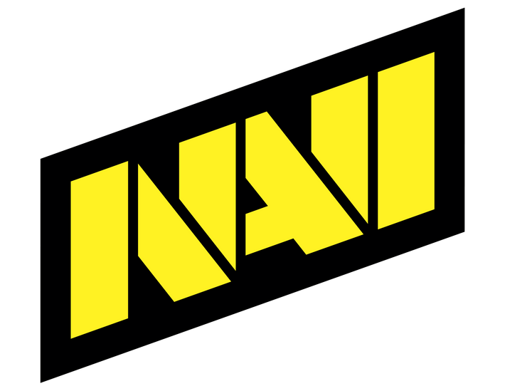

|
В 2010 году они уже получили 8 побед на различных турнирах мирового уровня по CS GO. Electronic Sports World Cup – Всемирный Кубок по Counter Strike запомнился фанатам замечательной игрой команды NAVI, которая заняла одно из первых мест в рейтинге на турнире. В этом судьбоносном году, Нави побили рекорд среди команд стран СНГ и заняли титулы IEM, ESWC WCG в один год. Именно 2010 год стал началом успеха команды, ведь тогда Нави впервые попала в мировой рейтинге и занимала первые места на равных с лучшими командами, более того, они выиграли больше призовых в Европе среди всех команд в 2010 году.
Команде помогла вернуться в прежнюю форму замена одного из игроков команды, а именно игрока «zeus» на не менее опытного «s1mple». Придя в NAVI Александр Костылев (s1mple) помог команде выиграть турнир ESL One: New York 2016. Тогда он сразу был признан лучшим игроком ESL One 2016. Прошлый состав приносил команде мало побед и было принято решения более радикально изменить состав, и пригласить новых, молодых энтузиастов. Замену нашли еще одному игроку, на смену которому пришел член настоящего состава – «Boombl4». Благодаря смене состава и новому капитану команды, NAVI вернули себе звание лучших игроков, и продолжили занимать призовые места на турнирах мирового уровня. Игрок команды «s1mple» снова был признан лучшим игроком года. Примерно в таком же темпе, со взлетами и падениями команда дошла до 2021 года. На данный момент Нави занимает второе место в мировом рейтинге. Турниры и матчи Нави КС ГО чрезвычайно популярны среди фанатов онлайн шутера. Вы можете посмотреть расписание всех матчей и турниров на нашем сайте, а также посмотреть старые записи на нашем плеере в лучшем качестве. Все актуальные новости о команде NAVI вы также можете прочитать на нашем сайте, без регистрации.
 Последним оффлайн-чемпионатом в CS:GO на сегодняшний день является IEM Katowice 2020. Тогда польские власти запретили ESL собирать людей в Spodek Arena всего за пару суток до начала плей-офф. В итоге команды играли на шикарной сцене, но при пустом зале. Так, кстати, NAVI и одержали свою первую крупную победу в новом составе. До ESL Pro League S11 NAVI не играли в онлайне почти полтора года! За это время в команде поменялось два игрока; все их матчи проходили на LAN’e. Поэтому когда их «вытащили» из зоны комфорта и посадили выступать в интернете, последствия не заставили себя долго ждать. У кого-то подскочил пинг, кому-то отключили интернет, что-то где-то заглючило — Natus Vincere снова прочувствовали все «прелести» онлайн-сцены Counter-Strike. В результате они начали EPL с двух поражений от BIG и North — команд, которые тогда даже не входили в мировой топ-20. И это был лишь первый тревожный «звоночек»! Худшее, как оказалось, было впереди — пусть они и впоследствии неплохо сыграли в лиге ESL.Дополнительная информация: |
|---|
NaVi CS:GOРожденные побеждать |
|---|